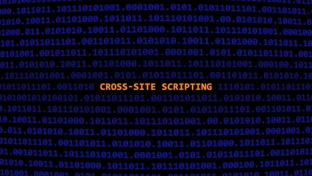

notes archive / threats & attacks
CWE-79: Cross-Site Scripting (XSS)
The most common and dangerous web vulnerability

Improper Neutralization of Input During Web Page Generation (aka Cross-site Scripting) is a web security vulnerability that allows an attacker to compromise user interactions with a vulnerable web application.
It happens due to improper neutralization of user input that gets rendered in a web page.
How Does XSS Work?
XSS occurs when:
- User input is included in web pages without proper validation or encoding.
- Attackers inject malicious scripts (usually JavaScript) that execute in the victim’s browser.
- The browser trusts the script because it appears to come from the legitimate site.
Types of XSS Attacks
| Type | Description |
|---|---|
| Reflected XSS (Type 1 / Non-Persistent) | The malicious script is immediately reflected off the web server, typically via a crafted link or form submission. |
| Stored XSS (Type 2 / Persistent) | The injected script is stored on the server (e.g., in a database, forum post, or comment) and runs when users view that content. |
| DOM-Based XSS (Type 0) | The attack happens entirely on the client side when JavaScript modifies the DOM without sanitizing user input. |
| uXSS (Universal XSS) | Exploits vulnerabilities in browsers or plugins rather than the web app itself. |
| Self-XSS | Tricks the user into executing malicious scripts in their own browser console or input field. |
XSS Attack Consequences
- Session Hijacking: Steal cookies or session tokens.
- Data Theft: Access sensitive user data.
- Website Defacement: Modify or vandalize site content.
- Malware Distribution: Inject malicious code to infect visitors.
- Account Takeover: Gain control of user accounts.
- Unauthorized Actions: Perform actions as the victim.
- Further Attacks: Launch phishing or lateral attacks.
XSS Prevention Techniques
| Method | Description |
|---|---|
| Input Validation | Check and restrict input to expected patterns, length, and type. |
| Contextual Output Encoding/Escaping | Encode data based on where it appears (HTML, JS, URL, etc.) to prevent script execution. |
| Sanitization | Remove or modify harmful input before rendering. |
| HTTPOnly Cookies | Prevent JavaScript from accessing sensitive cookies. |
| Content Security Policy (CSP) | A browser-level defense restricting which scripts can execute on the page. |
Summary
- XSS lets attackers execute malicious scripts in users’ browsers.
- It exploits trust between browser and site.
- Prevent by validating, encoding, sanitizing, and enforcing CSP.
Never trust what the user sends. Because one day, the user will be you.
quick review
tap to revealWhat is Reflected XSS?
Script immediately reflected off the server via a crafted link.
What is Stored XSS?
Injected script stored on server, runs for every visitor of that content.
What is DOM-Based XSS?
Attack happens entirely client-side via unsafe JavaScript DOM manipulation.
How does CSP prevent XSS?
Restricts which scripts can execute on a page at the browser level.
key terms
- CWE-79
- Cross-Site Scripting weakness
- XSS
- Script injection into web pages
- DOM
- Browser's HTML representation
- CSP
- Content Security Policy
- HTTPOnly
- Cookie flag blocking JS access
- Session Hijack
- Stealing tokens to impersonate users